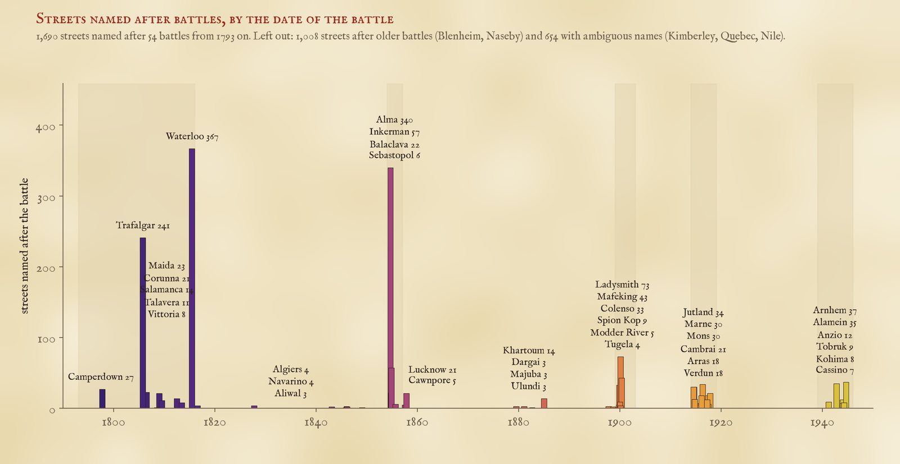
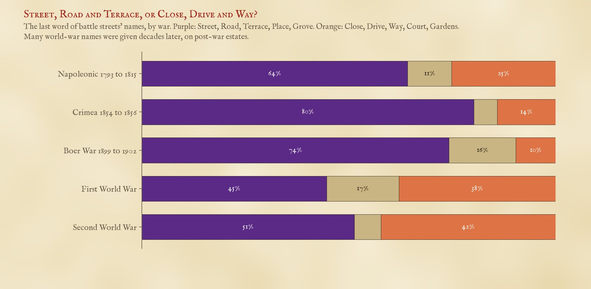
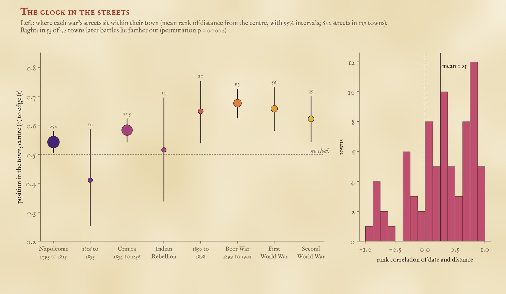
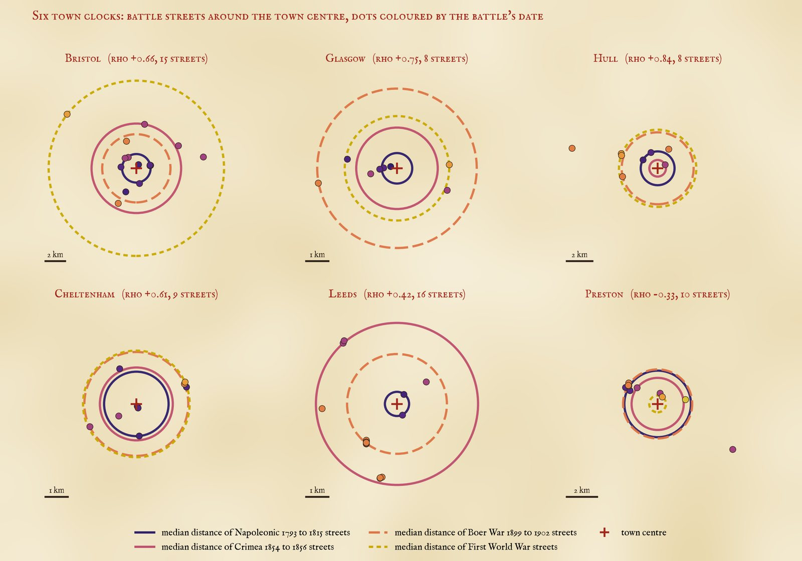
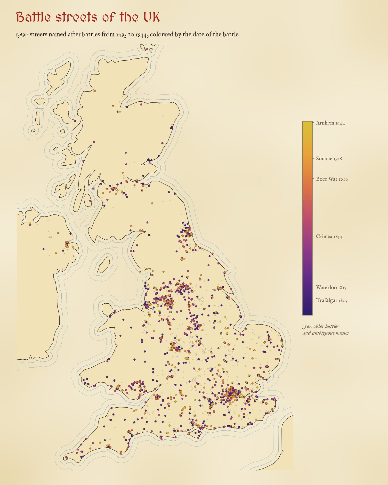

Every UK street named after a battle, 3,352 of them, coloured by the battle's date. Slide through time, zoom into a town to see the rings, or tap a street.
In 1854 British and French troops beat the Russians at the river Alma, and within a few years there were Alma Roads, Alma Streets and Alma Terraces in towns all over Britain. Victorian builders named new streets after the latest victory. If they did that every time, the battle names should be a clock buried in the street plan: Trafalgar and Waterloo near the old centre, Alma and Inkerman a ring further out, Ladysmith and Mafeking further still. Is it there?
I took every street in OpenStreetMap in the UK named after a battle, joined the pieces of each street, and dated each name by its battle. I set aside 1,008 streets named after battles before 1793 (Blenheim, Naseby, Culloden), which were named long after the event, and 654 with names that are usually something else: the Nile, Quebec, Gibraltar, Kimberley, Delhi. That leaves 1,690 streets named after 54 battles from 1793 to 1944.
The names come in bursts. Waterloo (367 streets) and Trafalgar (241) lead, then a gap of almost forty years: the battles from 1816 to 1853, Navarino, Algiers and the Sikh wars among them, gave only 18 streets. Then the Crimea: 340 streets named after the Alma, 57 after Inkerman, 425 in all, in a war of two years. The Indian Rebellion gave Lucknow and Cawnpore, the Boer War Ladysmith (73), Mafeking (43) and Colenso. The two world wars together gave 315: Jutland, Mons, the Marne, Arnhem, Alamein.

Streets named after each battle from 1793 on, by the date of the battle.
The world wars did not stop the habit, but they changed it. Only 13% of the streets named after battles from 1854 to 1902 end in Close, Drive, Way, Court or Gardens, the words of twentieth-century estates. For the world-war battles it is 39%: many of those names were given decades later as a theme for a new estate, not in the year of the battle.

The last word of the name, by war.
For the test I kept streets with an old-fashioned street word (Street, Road, Terrace, Place, Row, Grove and the like), named after a battle from 1793 on, not near a place of the same name, and within 10 km of a town of 20,000 people or more. In each town with at least four such streets I asked whether the later battles lie farther from the centre, using a rank correlation. In 53 of 75 towns they do, in 19 they run the other way and in 3 it is level. The average correlation is 0.25; if the dates are shuffled at random within each town it is close to zero, and none of 4,000 such shuffles came as high. Streets of one war often sit together, named in one go, which flatters a test that counts every street: counting each cluster of same-war streets within 500 m once, the average falls to 0.16 across 51 towns, and 27 of 4,000 shuffles come as high. Weaker, but still there.

Left: each war's streets ranked by distance within their own town. Right: the correlation of date and distance in each town.
Ranked within their own towns, the streets of the French wars sit just past the middle (0.54 on a scale from the centre at 0 to the edge at 1), the Crimean streets a little further out (0.58), and the Boer War streets furthest (0.68). In plain distance, the typical Napoleonic battle street is 1.5 km from its town's centre, the Crimean 2.0 km and the Boer War 2.4 km.
It is a real signal but a coarse one. Over half a century or more it shows: in 30 of the 40 towns with streets from both, the Napoleonic names sit closer in than the Boer War ones. But between neighbouring wars it is close to a coin toss: the Napoleonic streets are nearer the centre than the Crimean ones in only 47 of 92 towns. One reason is that Waterloo and Trafalgar never went out of fashion: 33% of Trafalgar streets end in Close, Way, Drive or Court, names of the last century. Another is that towns did not grow in neat rings. They grew along roads, around a railway station or an iron works, and some new suburbs went up close to the old centre.

Six town clocks, with rings at the median distance of each war's streets. Bristol, Glasgow, Hull and Cheltenham run broadly in order; Preston runs backwards.
Some towns keep good time. In Bristol the typical Napoleonic street is 1.4 km from the centre, the Crimean 4.5 km, the Boer War 3.5 km and the First World War's Jutland Road 8.9 km. Glasgow (a correlation of 0.75) and Hull (0.84) keep good time too. London barely does (a correlation of 0.12): it swallowed dozens of older towns, each with its own centre. Preston and Lincoln run backwards.
Greater London has the most battle streets (126), then Greater Manchester (91) and West Yorkshire (82), and the Alma is the commonest battle on the signs in 18 of 46 English counties, more than any other. Hampshire and Devon, with their naval towns, prefer Trafalgar. The map shows them all: slide the date to watch the layers arrive.

Every battle street from 1793 on, coloured by the date of the battle; grey: older battles and ambiguous names.
Streets. 6,885 OpenStreetMap highways whose names contain one of 111 battle names, queried with QLever, matched as whole words. Pieces of one street with the same name were joined when they chain within 600 m (1.5 km for through roads), giving 3,352 streets. I read the full list of names for every battle and removed by hand 9 that are not streets or not battles (pothole markers, moorings, railway sidings, Alma Martin Way, Arras Hill in Yorkshire, an old place name).
Dates. Each battle has the date of the battle itself, or for a siege its relief (Ladysmith, Mafeking) or fall (Sebastopol). The table is in the data. Battles before 1793 are set aside: a street named Naseby or Agincourt was named centuries later. 654 streets with names that are usually a place, a person or a colour are set aside too: Aboukir, Alexandria, Cabul, Copenhagen, Crimea, Delhi, Dunkirk, Falklands, Gibraltar, Kandahar, Kimberley, Magenta, Minorca, Nile, Portobello, Quebec, Scinde, St Vincent and Vigo. 32 more are within 3 km of a place of the same name (Waterloo in London and on Merseyside, Inkerman in County Durham, Camperdown in Dundee) and are probably named after the place.
What this cannot say. The name dates the battle, not the building of the street. Most streets were probably named within a few years of their battle, but some were named much later. Alma is also a woman's name: 50 of the 340 Alma streets are Closes, Avenues and the like more than 1 km from any Alma Street or Road, and some of those may be named after a person; even without them the Crimea (375) outnumbers both world wars. The town centre is Wikidata's point for the town, and each street belongs to the nearest town of 20,000 people within 10 km, so streets in a conurbation go to whichever centre is nearest. The test is a pattern across towns, not a dating method for any one street.